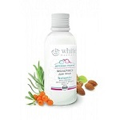

Молочко для тела
Краткое описание
Детское молочко для тела White Mandarin рекомендовано ведущими педиатрами страны. Применять можно с самого рождения крохи. Кожа ребенка, особенно у новорожденного, очень нежная, склонна к высыпаниям и раздражениям, потери влаги, и первая задача мамы - устранить все проявления, которые могут привнести дискомфорт.
Характеристики
Молочко для тела TM White Mandarin содержит такие активные компоненты:
- масло облепихи;
- масло Ши;
- масло сладкого миндаля.
Богатый состав успокоит и увлажнит кожу, поможет снять опрелости. Детской серией любят пользоваться и сами мамы во время грудного вскармливания
| Органическая косметика для детей ТМ White Mandarin: | Не содержит спирт | |||
| Не содержит красители | ||||
| Имеет натуральный состав | ||||
Подробное описание
Применять детское молочко можно под памперс, легкая основа быстро впитывается в кожу.
Объем: 200мл/220г